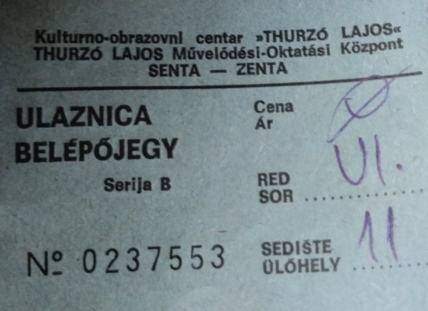

HATÁRTALANUL
-ELŐSZÓ_____________________01
-A KANIZSAI BULI____________02 -AZ ELSŐ FELLÉPÉS, AMIT
LÁTTAM_____________________03 -ELŐSZÖR A TANYÁN_________05 -MÁJUS
1.____________________06 -RANDOM BULI TÓNINÁL_____07
-PIKNIK_____________________ 09 -SZENT ISTVÁN______________11
-ESKÜVŐ____________________12 -GYERTYAFESTÉS____________14
-"ELSŐ"RANDI_______________15 -ÉV VÉGE-ELEJE_____________17
-ÉVFORDULÓ_________________18
Ez a könyv az ajándékom számodra az évfordulónk alkalmából. 12
hónap, 12 emlék. A kedvenc pillanataimat, és számomra különleges
alkalmakat írom le benne. Még nagyon kezdetleges ugyan, és közel
nincs benne minden olyan emlék, amit fontos lenne megőrizni, de első
nekifutásra csak ennyit sikerült megcsinálnom...
(Az
utolsó 4 oldal valamiért nem akar szépen működni, amikor visszafelé
lapozol, ezért bocsi :') )
Szerintem mondanom sem kell, miért olyan emlékezetes ez a tali. Annyit azért megsúgok, hogy nem amiatt, mert akkor kóstoltattam meg veletek a bundás almát. Eddigi életem egyik legmeghatározóbb dátuma, és nagyon remélem hogy még sokáig boldog nap lesz.
Ha jobban belegondolok, ez volt az első néptáncos előadás, amit látam, nem csak az első olyan fellépésed, amin már én is ott voltam. Annyira lelkes voltam, hogy ez apura is rátapadt, és ő is nagy kíváncsisággal jött el. Utólag nagyon vicces visszagondolni arra megfelelés érzetre, ami akkor bennem volt. Terv szerint te a fellépés után Hannához mentél volna, és odafele menet apuval olyanokat beszéltünk hogy elkísérjelek-e,
vagy mit kellene ilyenkor csinálnom. Ez volt az a nap, ami engem is igazán berántott a ti életetekbe, amióta érdekel, hogy mi is történik veletek néptáncosokkal. Azóta is ugyanolyan fülig érő mosollyal nézem az összes előadásotokat, mint aznap.
Izgatottság, félelem, hiány, ilyesmi féle rossz érzések azok, amik bennem voltak, mielőtt ideértél volna. Nagyon furcsa volt, hogy hozzám jön vendég, ilyen ezelőtt még alsóban történt. Azóta már kezdem megszokni, de az izgatottság úgy tűnik örökös akar maradni. Féltem, hogy mit szólsz majd, hol is élünk, de minden jel arra utal, hogy nem igazán zavar.
Egy eszméletlenül jó buli Bencééknél. Idillikus hangulat, és olyan érzés, mintha egy öreg baráti társaság lennénk, mintha házaspárok találkoztak volna, és nem középiskolások. Tábortűz, kaja, pia, keringőzés, pletykálások, örülök, ogy ezt mind együtt éltük meg.
Hasonló fajta idilli hangulat, mint májusban, csak egy egyszerű séta volt a falu egyik feléből a másikba, de ha visszagondolok rá, csak vidámság fog el. "Olyanok vagyunk, mint valami öreg házaspár."-mondtad, és nem is tudod, mennyire jól esett.
Miután hazaértél a tánctáborból csináltunk egy pikniket a parkban. Elmentünk kipróbálni a kínai kajáldát Becsén, vittünk egy pokrócot, szokkokat, EVŐPÁLCIKÁT, és lementünk a parkba. Nagyon jól éreztük magunkat, csak azt sajnálom, hogy Kanizsán nem sikrült még összehozni, ahol van kicsit nagyobb erdő is. Majd talán idén összejön.
Apuék most mentek először Becsére. Indulás előtt kicsit ideges voltam, főleg a félresikerült virágcsokrok miatt, de végül nem is késtünk el, nem tötént semmi baj. Mikor odaértünk, anyukád megtömött minket pogácsával, és sütivel, utána együtt indultunk a műsorotkra. Tatádék foglaltak nekünk helyet, közel volt a két család. Ami viszont 100%-ig biztos, hogy Viktor nagyon összehaverkodott apukáddal.
Unokatestvérem, Kristóf és Edina esküvőjére mentünk, és szerencsée szívesen vártak tége is, mint koszorúspáromat. Így már sokkal élvezhetőbb volt a mulatság, mint mikor csak családosan mentünk. Eltáncikáltunk, beszélgettünk, teleettünk magunkat minden kajából, majd este megszületett a személyes kedvenc képem, ami mindig mosolyt csal az arcomra.
Tiktokon küldtél még szeptember körül egy videót, amin gyertyát festenek, és hogy egyszer csináljunk ilyet. Megleptem magunkat a gyertyákkal, és ha nem is volt olyan egyszerű, mint amilynenek tűnt, egész jól elszórakoztunk velük. Jókat beszélgettünk, csak másnap reggel sajnos suliba kellett mennem, és nem maradhattam tovább.
2 hónap nem találozás után megbeszéltük, hogy elmegyünk baronba. Odafelé igaz, még taxiztunk, de hazafelé egy vérre menő kő-papír-olló után sikerült rávenni, hogy inkább sétáljunk. Kicsit meg voltam fázva, és mikor visszaértünk, olyan ápolást kaptam, mintha valami kisgyerek lennék. Nem volt olyan perc, hogy üres legyen a teásbögrém, kaptam kenőcsöt, porokat, szirupot, túlélőcsomagot a következő hétre lakáson, egy szóval mindnet, hogy kigyógyíts.
Az érzés, ahogy a meleg szobában, sztárbox nézése közben kenegeted a mellkasom a köhögés elleni mentolos kenőccsel beleégett az agyamba. Hétfőn úgy mentem suliba, mint akniek kutya baja. A becsei kirándlásomon ottmaradt a betegség. Csak az a baj, hogy átadtam neked....
A szünetben az eddigiekhez képest rengeteget voltunk együtt, annyira hogy nem is akarom külön írni. Mentünk ebédelni a mamáidhoz (ahol megjegyezném, olyan sokat ettem,hogy szünet végére 80 helyett 83 kiló lettem, és csak mostanra sikerült visszamenni 80ra), fellépést néztünk, bulikba mentünk, szinte már olyan volt, mintha odaköltöztem volna.Nagyon élvezetes téliszünet volt, talán az eddigi legjobb, remélem sok ilyen szünetben lesz még részünk.
Hát itt vagyunk.
Egy év telt el.
Köszönöm a rengeteg emléket, amit ehhez az évez köthetek, azt
kívánom nekünk, hogy ne csak egy ilyen könyvet rakhassunk fel a
polcra.
Légy jó.
Szeretlek.
Kálmán Zoltán
2024.02.17.